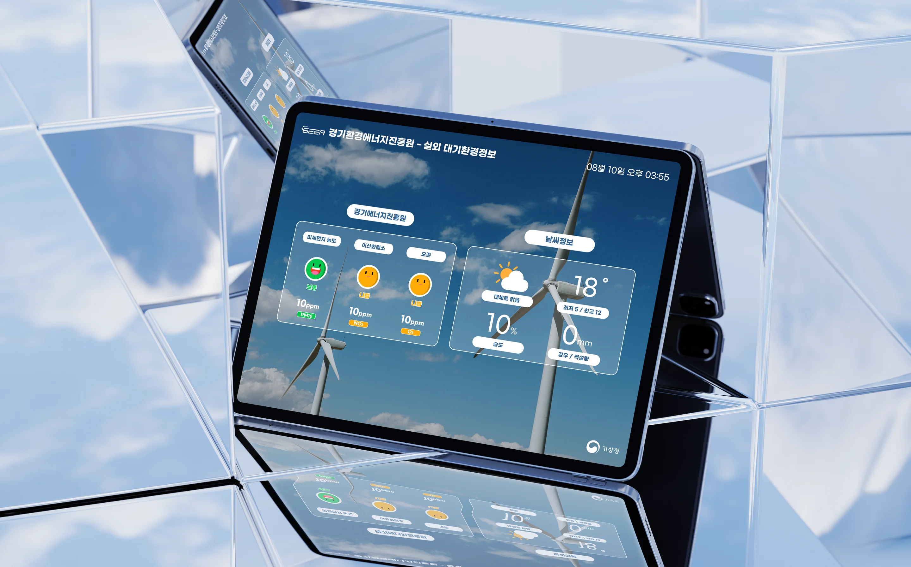
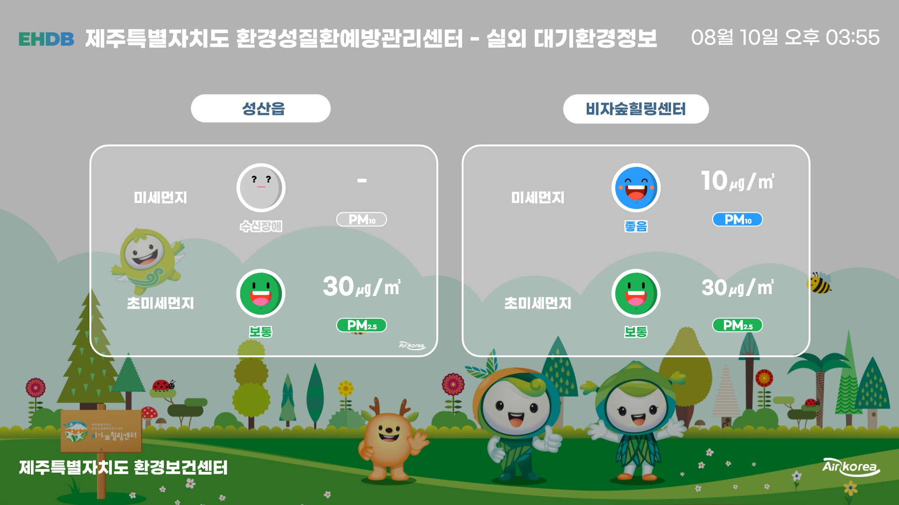
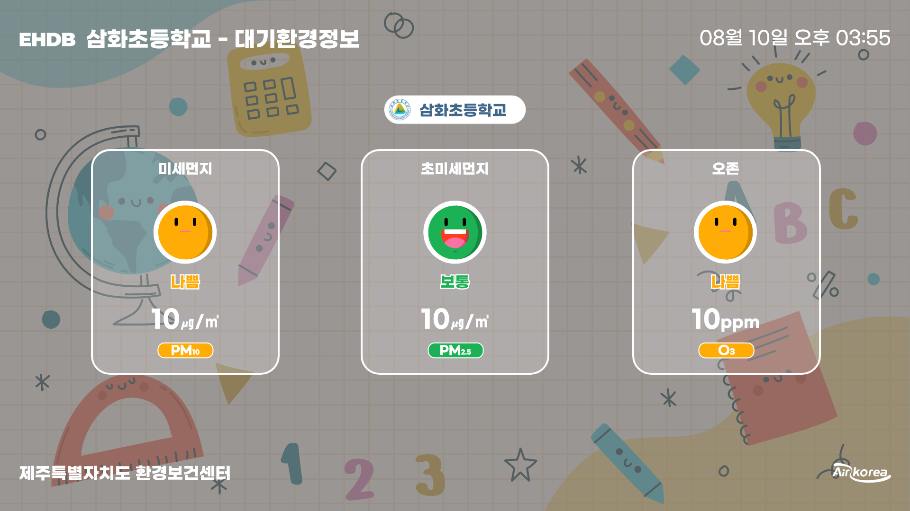
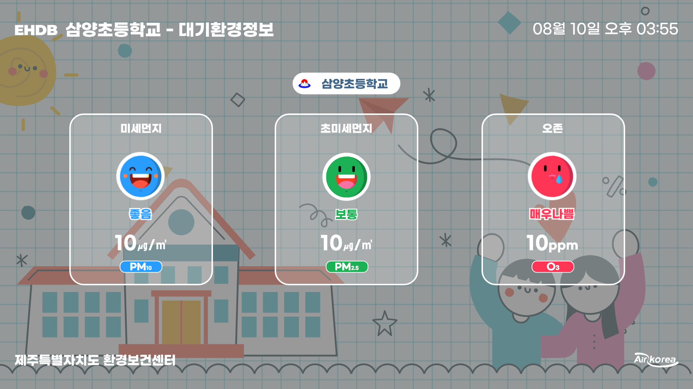
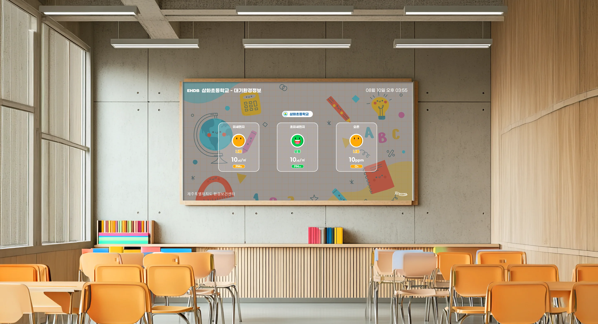
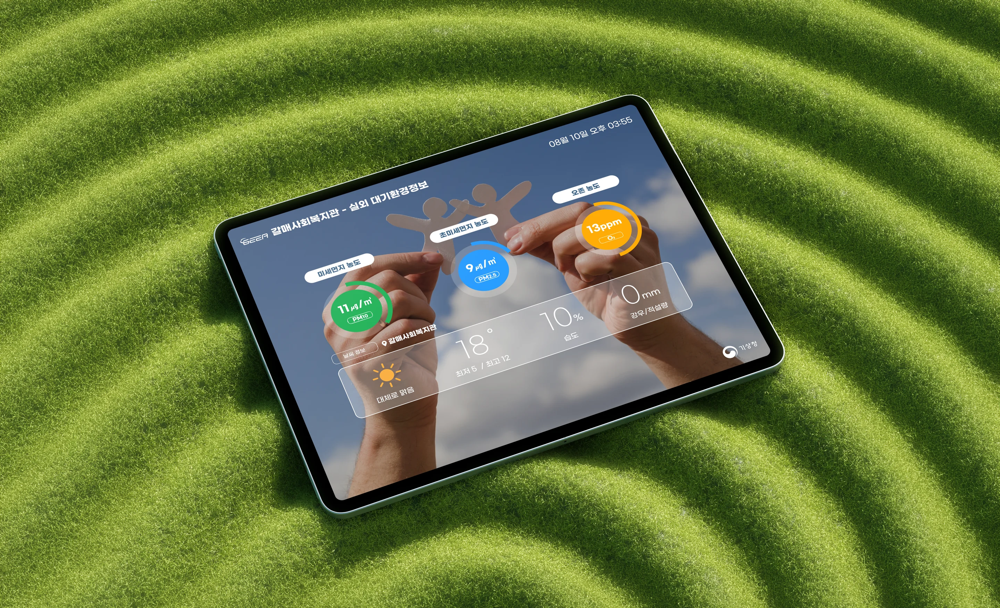

-
Adaptive
요구사항이 달라도 구조가 유연하게 휘어지며 대응합니다.
-
Modular
모듈형으로 정보 블록을 조합해 기관별 원하는 화면을 구성합니다.
-
Clarity
어떤 레이아웃이든 정보가 명료하게 읽힙니다.
Color
컬러는 장식이 아니라 등급 그 자체입니다. 상태 컬러 다섯 가지가 얼굴 아이콘, 원형 그래프, 범례 배경에 똑같이 쓰이고, 나머지 화면은 흰색과 반투명 글래스로만 구성해 멀리서 보더라도 상태 컬러가 가장 먼저 보이게 했습니다.
Status · 대기 등급 컬러
환경부 대기환경기준 · 단위 ㎍/㎥
Base · 텍스트와 글래스
배경 사진 위에 올라가는 요소
Navy
흰색 섹션 타이틀 pill 안의 텍스트. 화면에서 유일한 진한 색입니다.
White
모든 수치·항목명 텍스트, 카드 테두리(0.2083vw), 섹션 타이틀 배경.
Line 20%
실내 측정 목록(반별 수치) 사이 구분선.
Glass 30%
모든 레이아웃의 카드·박스 배경. 하늘 사진이든 일러스트든 같은 투명도로 맞춰, 배경이 바뀌어도 카드 영역이 같은 밝기로 구분됩니다.
Outline
날씨정보 태그 테두리. 채우지 않은 보조 라벨에만 씁니다.
Typography
서체는 Gmarket Sans 하나만 씁니다. 획이 굵고 자폭이 넓어 3~5m 거리에서도 숫자가 뭉개지지 않습니다. 크기는 모두 vw로 지정해 1920 화면이든 4K 화면이든 같은 비율로 보입니다.
Typeface
Light 300 · Medium 500 · Bold 700
강우량 15mm · 최저 5 / 최고 12
08월 10일 오후 03:55 · 습도 · 대체로 맑음
초미세먼지 농도 10㎍/㎥ PM2.5
Type Scale
| 역할 | vw | px | 굵기 | 크기 비교 | 예시 |
|---|
Graph & Icon
숫자를 읽지 않아도 상태를 알 수 있게 원형 그래프와 표정 아이콘을 함께 씁니다. 그래프의 바깥 선은 농도가 높을수록 길어지고, 안쪽 원과 얼굴은 등급 컬러로 바뀝니다.
Ring Gauge · 직접 움직여 보기
민감군은 장시간 실외활동을 줄이세요.
Chart Asset
Face Icon
등급 이름이 함께 그려진 표정 아이콘
Weather Icon
기상청 하늘상태·강수형태 대응
Legend & Mark
범례 pill과 기관·출처 로고

헤더 · 제주
날씨 수신 실패 시 표시
제주특별자치도 환경성질환예방관리센터에서 진행한 프로젝트로 환경성질환예방관리센터의 캐릭터 이미지를 활용한 DID 디자인과 초등학교에서 쓰는 별도의 DID 디자인 요청을 받아 진행했습니다. 초등학교 DID는 어린 아이들에게도 친숙하게 다가갈 수 있는 배경 디자인에 신경써서 제작했습니다.




